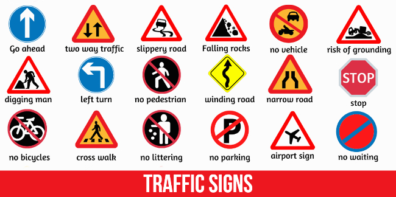

We know that traffic signs and signals are crucial to road traffic at all times of day and night. They are also crucial for drivers to understand the traffic rules and regulations. Nevertheless, we see many drivers disregarding traffic signals and signs. They drive on the wrong side of the road, speed up and slow down, and weave through lanes like they don't exist.
Traffic problems can be found in many cities. Signs help to prevent behaviors that can lead to gridlock, such as drivers making turns without indicating. Some traffic signs, such as yield signs and stop signs, serve to avoid collisions, alerting drivers of approaching vehicles.
The signs on traffic signals do more than tell you when to slow down or what speed limit. Temporary signs like those around construction zones let you know your normal route might be different or that people are working. These signs, such as ice-on bridge signs and winding-road signs, are important. You'd be shocked at the potential dangers if you didn't have certain traffic signs.
Traffic signs are seen as being for the benefit of drivers, but they are also there for the protection of pedestrians who are not up to speed, so to speak. Warning signs in white reflect octagonal red lights indicating that it is not a good idea to proceed.

Considering how the signs are everyplace, they would vary substantially if it was the location of the signal that changed rather than the rule. It was not practical to have different rules in several locations. The consequences for breaking the rules could be grave.
Sign design has a lot of importance. Traffic signs often use images to communicate messages, such as animals crossing the road or children playing. It is important because anyone can understand the sign's meaning even if they don’t speak the country's language. It is also important to consider the color of the sign. Red signals to a driver that they need to stop or yield; yellow indicates caution.
Traffic signs are the best safety measure for drivers. Our roads would be dangerously chaotic without them. Drivers wouldn't know when to stop, yield or go how fast. They would not be aware of any upcoming hazards. A lack of signage could also allow reckless drivers to do whatever they want, putting others and themselves at risk. Traffic signs clearly communicate the rules and keep drivers safe.
Traffic signs are very important nowadays as the frequency of traffic and car and bike users are increasing. To make sure that you are safe when driving, traffic signs play a huge role in keeping you safe from unwanted dangers.